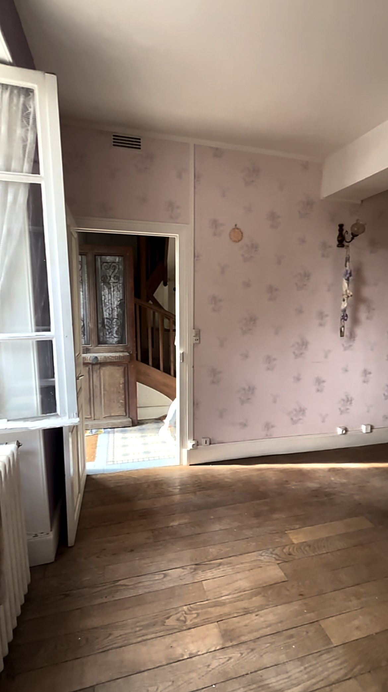
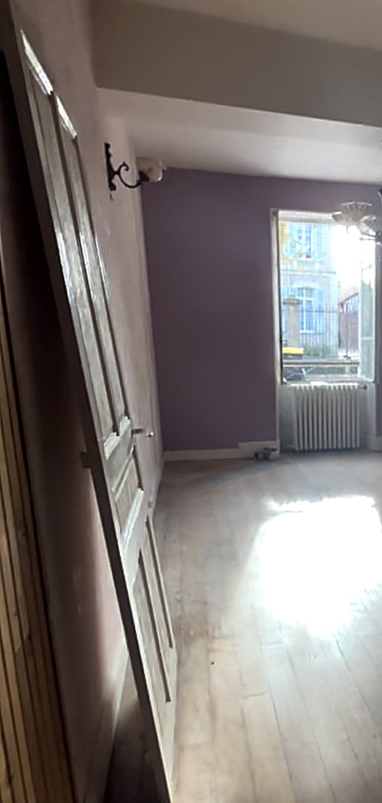
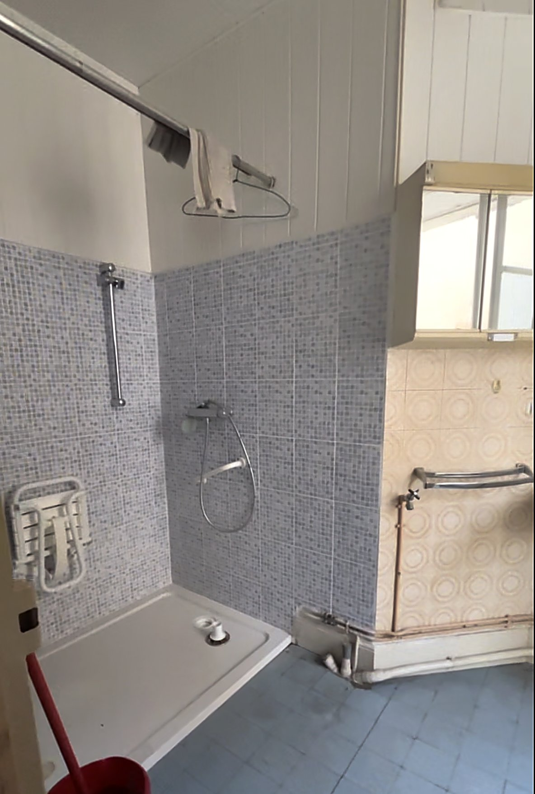
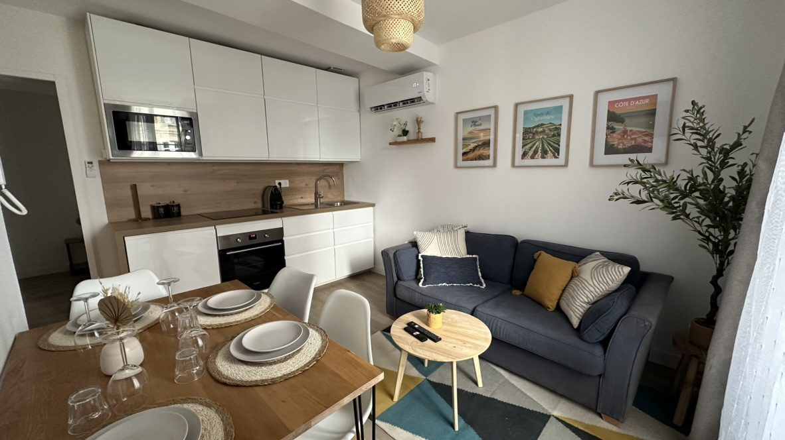
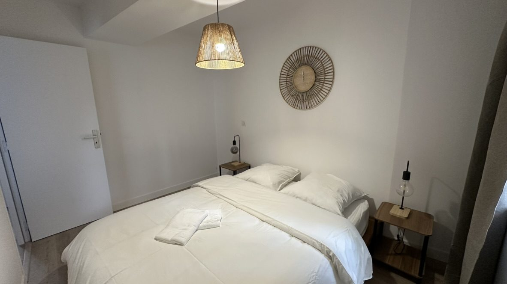
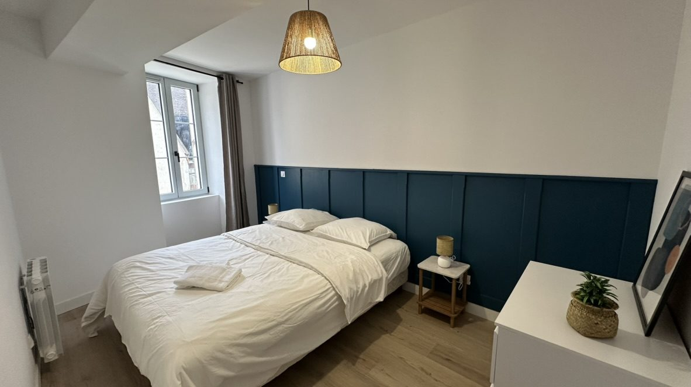
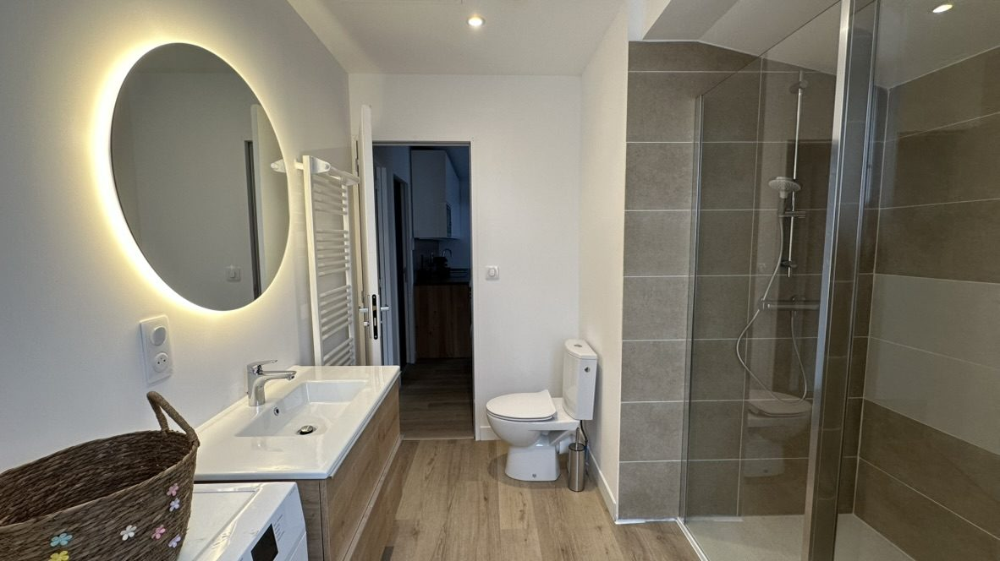

Ce projet porte sur la rénovation de l'appartement du bas de la résidence La Capeline, à Chablis. Le logement conserve des éléments de caractère — cheminée en pierre apparente, parquet ancien — aux côtés d'aménagements plus datés qui seront repensés.
Le projet reprendra la distribution des pièces, la salle d'eau et les revêtements, tout en valorisant les éléments d'origine du bâti.
- Lieu
- Chablis, Yonne
- Année
- À préciser
- Programme
- Rénovation d'un appartement
- Mission
- À préciser
- Surface
- À préciser
- Statut
- Travaux achevés



Après travaux
LIVRÉ




Projet suivant
Le Canotier — Appartement à Chablis